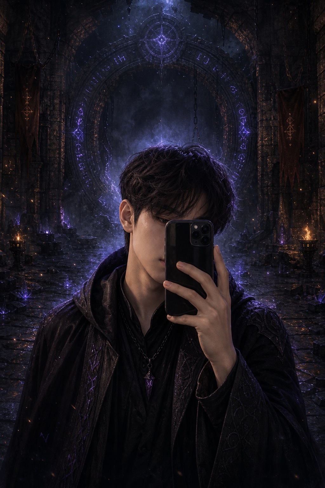

Build style
Gameplay-first, UI-conscious, and comfortable moving between Unity, C#, backend APIs, automation, and portfolio-grade presentation.
Unity Developer / Gameplay Programmer
A dark fantasy portfolio shaped like a game menu, built to showcase Unity systems, WebGL demos, live GitHub projects, and clean product thinking.

Character sheet
Gameplay-first, UI-conscious, and comfortable moving between Unity, C#, backend APIs, automation, and portfolio-grade presentation.
Turn project work into a sharp recruiter experience with live repos, WebGL proof, contact flow, and admin visibility in later phases.
GitHub for code, Zalo for fast contact, CV for recruiter review, and chatbot for guided navigation.
Live GitHub relics
GitHub project relics are being fetched. Fallback data will appear if the API is unavailable.
Unity WebGL Try Now
This Phase 3 slot uses a lightweight WebGL-style demo page. Replace `public/games/biome-gate` with a Unity WebGL build when it is ready.
Skill runes
Arcane library
"Programs must be written for people to read, and only incidentally for machines to execute."
Harold Abelson
Systems thinking for cleaner gameplay architecture.
Readable code habits for long-lived projects and teams.
Contact portal